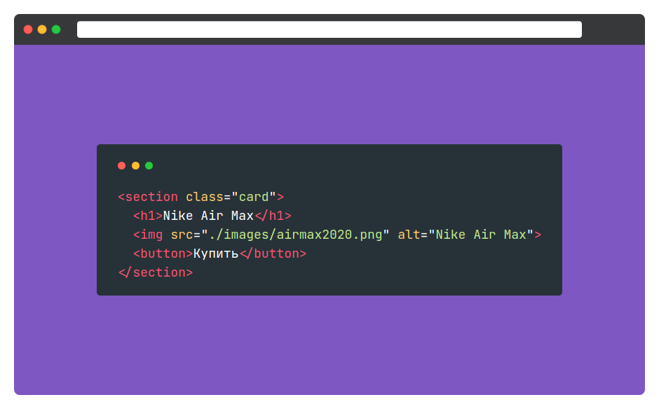

В этом испытании вы реализуете терминал с кодом и проработаете навыки работы с
тегом <pre>.

Стили
Терминал
-
Внутренние отступы:
20 пикселейпо вертикали и30 пикселейпо горизонтали - Цвет текста:
белый - Цвет фона:
#263238 -
Закругление:
5 пикселей. Для закругления используйте свойствоborder-radius
Шапка
Внутри шапки терминала содержится три круглые кнопки с разными цветами.
- Закругление:
50% - Высота и ширина:
11px - Отступ справа:
5px - Внешний отступ снизу:
20px -
Перед написанием стилей для кнопок сбросьте свойства
borderиpaddingдля них
Цвета кнопок:
- Красный:
#ff5f56 - Желтый:
#ffbd2e - Зелёный:
#27c93f
Код
- Для тега
preсбросьте стандартные внешние отступы -
Для тега
codeустановите следующие стили:- Размер шрифта:
18px - Межстрочный интервал:
1.5 - Шрифт: JetBrains Mono. Семейство шрифтов: monospace
- Размер шрифта:
Каждый логический элемент внутри кода имеет своё цветовое выделение:
- Тег:
#ff5370 - Атрибут: #ffcb6b
- Значение атрибута: #c3e88d
Вёрстка «кода»
Используйте следующую конструкцию для получения отформатированного кода:
<section class="card">
<h1>Nike Air Max</h1>
<img src="./images/airmax2020.png" alt="Nike Air Max">
<button>Купить</button>
</section>Здесь вы можете увидеть несколько различных мнемоник. Их полезно знать, так как они часто используются при создании веб-приложений.
-
<— знак «меньше». Он используется при открытии тега. >— знак больше. Он используется при закрытии тега."— двойные кавычки.
Важно сохранить форматирование. Попробуйте поиграться с этой частью кода и посмотрите, как это отобразится в браузере.
Подсказки
-
<pre>— тег для вставки отформатированного текста. Подробнее можно прочитать на Code Basics - Внешний отступ снизу необходимо создать у шапки, но не у каждой кнопки